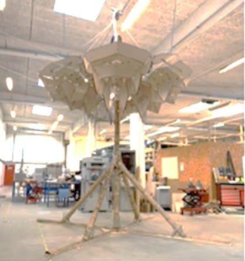

Structural Systems
Geometry-informed structural design, including masonry, active-bending systems, and deployable structures explored through analysis and prototypes.

Computational Design
Custom solvers and parametric workflows linking geometry and performance for architectural and structural applications.
Reversible Construction
Kinetic, demountable, and transportable construction systems developed with a focus on adaptability, reuse, and lifecycle performance.

Building Technology & Prototyping
Experimental building components and façade systems developed through digital fabrication and physical testing.